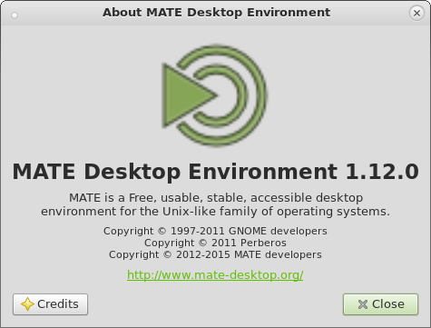

MATE 1.12 released
After 5 months of development the MATE Desktop team are proud to announce the release of MATE Desktop 1.12. We’d like to thank every MATE contributor and user.

What’s new in MATE 1.12
The headline changes in MATE 1.12 are:
- Fixes and improvements for GTK3 support across the entire MATE Desktop including GTK 3.18 support.
- Touchpad support is significantly improved and now features multi touch and natural scrolling.
- Multi monitor support has been improved so the display settings use output names and the revised UI lets you set the primary monitor.
- The power applet now displays model and vendor information so you can distinguish between multiple battery powered devices.
- Improved session management which now includes screensaver inhibition while playing media.
- MATE now listens to the
org.gnome.SessionManagernamespace.
- MATE now listens to the
- Extended systemd support.
- Long standing bugs and many little usability paper-cuts were fixed.
- For example, panel applets are no longer reordered when changing screen resolutions.
- Translations updated and a number of components now retrieve strings directly from
gschema(requires intltool 0.50.1). - Dropped support for
win32andosx.
The various components of MATE 1.12 are available for download here:
Screenshots
Changelog
Here is a more detailed break down of what has changed.
mate-common
- Support
lcov1.12 - Update documentation and examples
mate-desktop
- Require
dconf0.13.4 andxrandr1.3 - Add
gsettingskey to toggle overlay scrolling in GTK+3 - Add some icons to fix missing icons in GTK+3 with custom icon theme
- Mouse schema: enable middle-click emulation by default
- RR: implement missing mate_rr_output_get_possible_crtcs function
- RR: fix laptop identification by output name
- RR: show output name in addition to display name
- Moved docbook user guide to a separate project
- Dropped dependency on yelp (not needed after moving user guide)
libmatekbd
- Add GObject introspection
- Layout view/print dialog: remove useless Help button
- Layout view/print dialog: some UI fixes
libmatemixer
- oss: Only use modify counter for polling on Linux, it is broken on BSDs
- alsa: Fix FTBFS with old versions of ALSA
- alsa: Fix fade
libmateweather
- Location updates for timezones
mate-icon-theme
- Don’t build a
pkgconfigfile
Caja
- Connect to server dialog: add support for AFP
- Improve multi-monitor support
mate-polkit
- Add support for GTK3 application indicators.
Marco
- Add manual and by-pointer window placement
- Use Alt-` for switching between windows of the same application
mate-settings-daemon
- Add new keybinding for logout (empty by default)
- Touchpad settings: added support for natural scrolling, 2 finger and 3 finger clicks
- Mouse: use
syndaemon -Kto ignore Ctrl+C and other combos - GTK+3: make xrandr tray applet support custom panel themes
mate-session-manager
- Add support for an optional dock, such as Plank
- Add support for new
libsystemdin addition to existinglibsystemd-login - Only wait 1 second max on logout/shutdown
- Turn GTK+3 overlay scrolling on/off on start using new gsettings key
mate-menus
- Use
pkg-configto check for python (requires python 2.7)
mate-panel
- Require
xrandr1.3 - Add option to enable/disable week numbers in calendar
- Fix positions of locked applets on screen resolution change
- GTK+3: add a style class for applets to follow
panel-menu-bar
mate-themes
- GTK3 all themes: style volume/brightness applet slider
- Assorted improvements and refinements for all themes, in particular for GTK 3.18.
mate-notification-daemon
- Fix height and visibility of themes in gtk3
- Multiple theme fixes
mate-control-center
- Appearance: restored Interface tab
- Display: added support to set the primary monitor
- Display: show output names in addition to display names
- Keybindings: added keybinding for logout
- Touchpad settings: add option to enable/disable touchpad
- Touchpad settings: added support for natural scrolling, 2 finger and 3 finger clicks
- Improved categorization
- GTK+3: fix font rendering in Appearance and mate-font-viewer
mate-screensaver
- Add support for
libsystemdin addition to existinglibsystemd-loginsupport. - Don’t fade to black when locking the screen
- Fix
systemdevent handling
mate-media
- Multiple fixes in manpages
- GTK+3: add style classes for slider and menu for volume-applet
- GTK+3: fix missing icons with custom icon theme
mate-power-manager
- Require
xrandr1.3 - Show vendor/model information for devices
- Fix backlight adjustment on Macbook Pro
- GTK+3: support custom themes
- GTK+3: fix brightness applet behavior
mate-system-monitor
- SysInfo: add proper detection for Linux Mint and LMDE
- SysInfo: let distributions define custom side image
- Interface: add border to notebook
- Add support for
libsystemdin addition to existinglibsystemd-loginsupport - Support build with C++11
- Drop useless dependency on mate-icon-theme
- Drop C89 support
Atril
- Drop support for
win32,osxandhildon - Drop useless
mate-icon-themedependency - Drop embedded MathJax in favor of using a distribution packaged version
- Make
smclientmandatory
caja-extensions
- Some string fixes
Engrampa
- Fix
ngettextusage in progress dialog - Make extracting multiple archives to a separate dir actually work
- Fixed overwrite check when the files to be extracted are inside a folder
Eye of MATE
- Assorted bug fixes.
mate-applets
- Accessx-status, geyes: have applet background automatically painted
- Cpufreq: make cpupower the default library
- Drop useless dependency on
mate-icon-theme - GTK+3: fix missing icons with custom icon theme
- GTK+3: make cpufreq, charpick and drivemount support custom panel themes
mate-netbook
- Window Picker Applet: have background automatically painted
mate-netspeed
- Have applet background automatically painted
- Add silent rules
mate-sensors-applet
- Add support for nvidia thermal and cooler sensors (requires libxnvctrl >= 256.25)
- Add
mbmonplugin - Make
udisksplugin poll for new value
mate-terminal
- Fix —tab option that has been broken in 1.10.0
- Enable silent rules by default
- Drop support for
win32andosx
mate-user-share
- Drop useless dependency on
dbus-1 - Drop Apache 2.0 support
mate-utils
- Add application icon to mate-system-log
- Add timestamp instead of window name to screenshot filenames by default
- Have dictionary applet background automatically painted
- Translation fixes for
gsettingsschemas
Mozo
- Enable startup notification
- Add silent rules
Pluma
- Add
--enable-testsoption to enable/disable running tests during the build - Add plugin to strip trailing spaces on saving
- Bring back active plugins listing in bugreport script
- Drop support for
win32andosxand the checkupdate plugin - Capitalize Pluma in window titles and desktop file
- GTK3. fix print-preview
- Some annotation fixes
caja-dropbox
- Adjust the default caja extensions dir
- Include autogen.sh in tarball